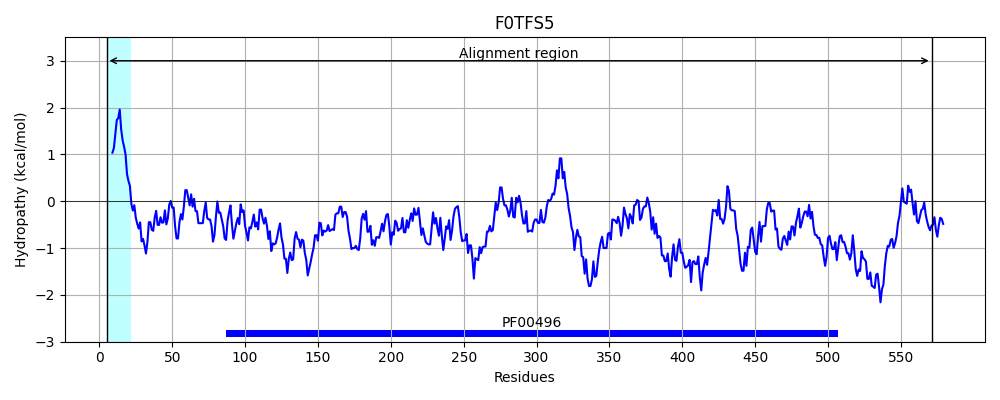

Hit Accession: F0TFS5
Hit TCID: 3.A.1.5.32
Hit Description: gnl|BL_ORD_ID|4117 gnl|TC-DB|F0TFS5|3.A.1.5.32 Oligopeptide ABC trasporter substrate binding protein OS=Lactobacillus acidophilus (strain 30SC) GN=LAC30SC_07285 PE=4 SV=1
Mach Len: 575
e:0.000000
Query TMS Count : 1
Hit TMS Count: 1
TMS-Overlap Score: 0.750000
Predicted Substrates:CHEBI:46953;alpha-D-galactoside
BLAST Alignment:
Score: 643 , Bit scores: 252 bits, E-value: 3.5e-76, Alignment length: 575, Percentage identity: 31
Query: 3 KLIKYISILLIVVLVLSACGKSSNKDEGVKDATKTETS------KHKGGTLNVALTA--PPSGVYSSLLNSTHADSVVEGYFNESLLATDKK-IRPKAYIASWKDIEPAKKIEFKIKKGIKWHDGNELKIDDWIYSIEVLANKDYEGAYYP-SVENIQGAKDYHEGKTDHISGLKKIDDYTMQV------TFDKKQENYLTGFITGPLLSKKYLSDVPIKDLAKSDKIRKYPIGIGPYKVKKIVPGEAVQLVKFDDYWQGKPALDKINLKVIDQAQIIKAMEKGDIDVANDATGAMAKDAKSSNAGLKVLSAPSLDYGLIGFVSHDYD-KKANKTGKVRPKYEDKELRKAMLYAIDREKWIKAFFNGYASEINSFVPSMHWIAANPKDLNDYKYDPEKAKKILDKLGYKDRDGDGFREDPKGNKFEINFKHNSGSNPTFEPRTAAIKDFWEKVGLK---TNVKLVEFGKYNEDLANASKDMEVYFRSWAGGTDPDPSDLYHTDRPQNEMRTVLPKSDQYLDDALDFEKVGIDEKKRKDIYVKWQKYMNDELPGLPMFQGKSITIVNDKVRNLDIE 557
K+ I++L V L L+ACGK SN++ +S GGT+ VA+ P +G+++ L+++ D+ V Y ESL +TD + A+ K + AK IKKG+KW DG ++ D+ Y+ E++ANKD + Y S+ ++ G K+YHEGK ISGL+ D + T G+I YL DV DL SDKIRK P+ GPYK++K+V G++ V Y++GKP L KI VI+ + ++++ DV + + K++ G+ ++ L Y +GF +D KK + K +K LR+A+ Y ++ + K + G + I + +P + KD+ Y Y+ +K +ILDK GYK + +R P G I+ SG N EP W+K GL T +L+EF + + + N ++++ +W+ ++P P+DLY P N R V K+ Q LD+ +D +K + + R D + +WQKYM+DE LP+ +IT VN K+ ++
Sbjct: 5 KVFAGITLLSGVALTLAACGKPSNQNANEASTAAKFSSVVPKKATKNGGTVKVAVETDTPFTGIFNDELSTSATDTEVMQYGAESLFSTDDHYVFTNKGAATIKIDQKAKTATINIKKGVKWSDGKQVTAKDYEYAYEIIANKDSKSQRYTASLADLVGLKEYHEGKASTISGLEMPDGENGRKVVLHFKTMKPGMNTSGNGYIWEAAAPYHYLKDVKFSDLMSSDKIRKKPLFFGPYKLQKLVRGQSATWVPNKYYYKGKPKLSKITATVINPNSVAQSIKSNKFDVI-QVINSQWPNVKNTK-GVNFIATVPLSYSYLGFKVGKWDAKKGENVMNPKSKMNNKALRQAIGYGMNVNQVAKRYSYGLSFRIPTLIPKQFGDYFD-KDVKGYSYNIKKGNEILDKAGYKKK--GTYRVQPNGKPLTIHLAAMSG-NANQEPIIQNYIQQWKKEGLNVKLTGGRLIEFNSFYDKVQNDDPSVDMFMGAWSLSSEPSPNDLYSKTAPMNYSRFVTKKNTQLLDE-MDSQK-AFNHQYRIDKFHEWQKYMDDEAYVLPVSNSYTITAVNKKLTGYSLK 571 | Protein Hydropathy Plots: |
|---|
|  |
Pairwise Alignment-Hydropathy Plot:
|
|---|
|